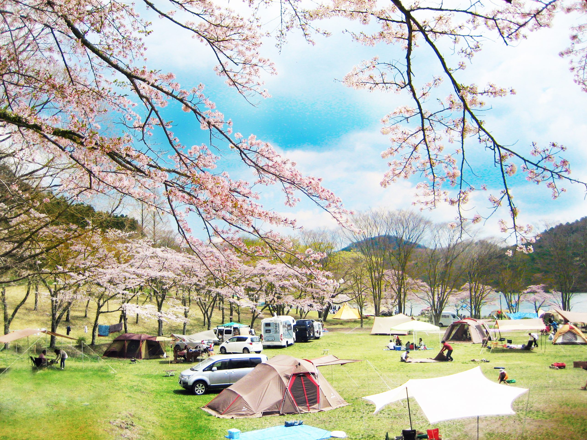
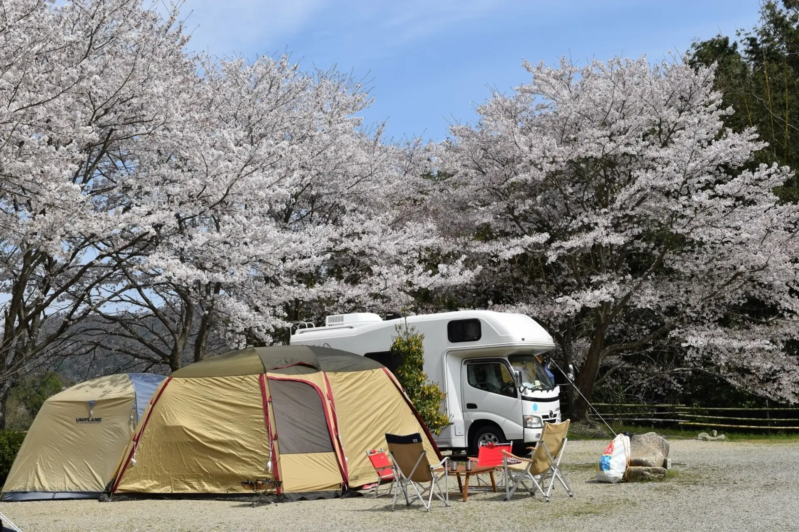
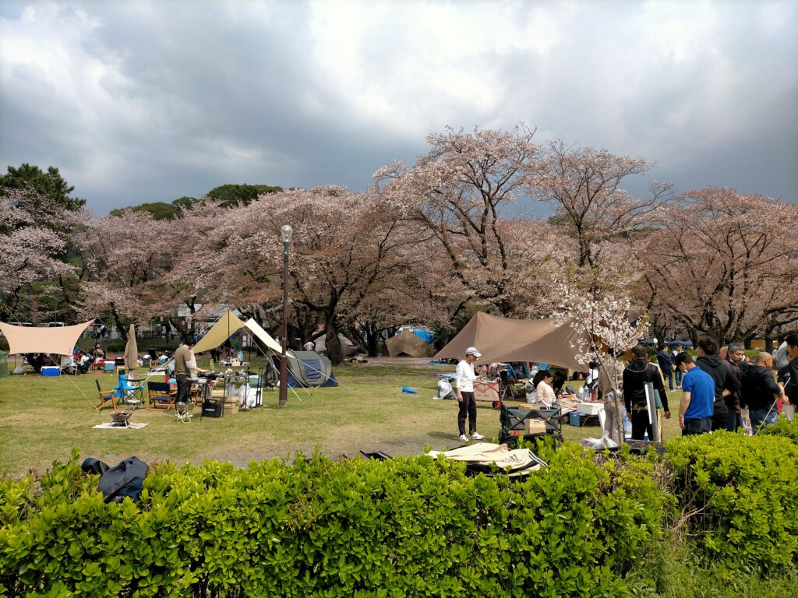
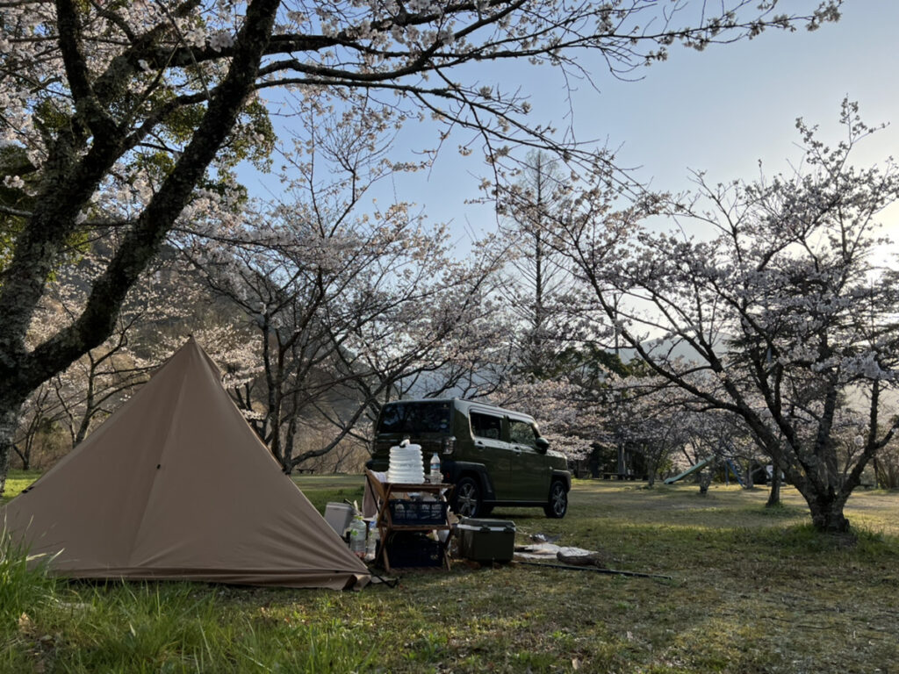

Mỗi năm, khi mùa đông vừa khép lại, Nhật Bản bước vào một trong những khoảnh khắc đẹp nhất trong năm – mùa sakura. Hoa anh đào nở rộ khắp các công viên, ven hồ, dưới chân núi, mang theo cảm giác nhẹ nhàng, trong trẻo và rất “Nhật”.
Nếu việc ngắm sakura trong thành phố đã quá quen thuộc, thì camping giữa mùa hoa anh đào lại là một trải nghiệm hoàn toàn khác – chậm hơn, yên tĩnh hơn và gần gũi với thiên nhiên hơn rất nhiều.

Sakura – không chỉ để ngắm, mà để cảm nhận
Sakura ở Nhật không chỉ đẹp vì hình dáng hay màu sắc. Điều đặc biệt nằm ở thời gian tồn tại ngắn ngủi của hoa. Chỉ khoảng một đến hai tuần, những cánh hoa mỏng manh đã bắt đầu rơi, khép lại mùa xuân rất nhanh.
Chính vì thế, người Nhật thường chọn cách dành thời gian trọn vẹn cho sakura:
- Đi dạo chậm dưới tán hoa
- Ngồi yên lặng bên hồ
- Hoặc đơn giản là nhìn hoa rơi trong gió
Camping giữa mùa sakura giúp kéo dài khoảnh khắc ấy – không chỉ là vài giờ tham quan, mà là cả một ngày và một đêm sống cùng mùa hoa.
Vì sao camping mùa sakura lại đặc biệt?
Không giống camping mùa hè hay mùa thu, camping mùa sakura mang một cảm giác rất riêng:
- Ban ngày: Hoa nở rực rỡ dưới nắng xuân dịu nhẹ, không khí mát mẻ, dễ chịu.
- Buổi chiều: Ánh nắng nghiêng qua tán hoa, không gian trở nên rất “cinematic”.
- Ban đêm: Trời se lạnh, lều sáng đèn, yên tĩnh tuyệt đối – một cảm giác rất khác với thành phố.
Ngồi trước lều, nhâm nhi đồ uống ấm, nghe gió nhẹ và nhìn cánh hoa rơi – đó là khoảnh khắc mà nhiều người chỉ trải qua một lần là nhớ mãi.
Camping & sakura – sự kết hợp dành cho người muốn “đi chậm”
Không phải ai cũng phù hợp với kiểu du lịch đông đúc, chen chúc giữa mùa cao điểm sakura. Camping mang lại một lựa chọn khác:
- Không cần chạy theo lịch trình gấp gáp
- Không cần bon chen điểm check-in
- Chỉ cần đủ thời gian để ở lại – quan sát – cảm nhận
Đặc biệt, với những người đi một mình hoặc lần đầu thử camping, trải nghiệm này thường mang lại cảm giác:
“Mình không hề cô đơn, chỉ là đang ở rất gần thiên nhiên.”

Mùa sakura 2026 – thời điểm lý tưởng để thử camping
Theo kinh nghiệm những năm trước, sakura thường nở từ cuối tháng 3 đến đầu tháng 4, tùy khu vực và thời tiết từng năm.
Đây là giai đoạn:
- Thời tiết ổn định
- Ban ngày mát, ban đêm se lạnh
- Rất phù hợp để camping qua đêm
Nếu bạn từng muốn thử camping nhưng còn do dự, thì mùa sakura chính là thời điểm dễ bắt đầu nhất.
Mở đăng ký lịch Camping Sakura 2026 cùng Camp Nhà Thỏ
Từ tháng 3 đến đầu tháng 4/2026, Camp Nhà Thỏ chính thức mở đăng ký lịch camping mùa sakura.
Hình thức là camping share:
- Cùng đi – cùng trải nghiệm
- Phù hợp cho người mới, người đi một mình hoặc nhóm nhỏ
- Không cần chuẩn bị quá nhiều đồ cá nhân
Camp Nhà Thỏ đồng hành trong suốt chuyến đi, từ khâu di chuyển, setup cơ bản đến trải nghiệm camping an toàn và thoải mái.
Nếu bạn muốn:
- Thử camping lần đầu
- Ngắm sakura theo cách chậm rãi hơn
- Trải nghiệm một mùa xuân rất khác ở Nhật
Bạn có thể liên hệ trực tiếp Camp Nhà Thỏ qua TikTok hoặc fanpage chính thức để đặt lịch ngay hôm nay.
Mùa hoa chỉ nở trong chốc lát, nhưng trải nghiệm thì có thể ở lại rất lâu.
Hẹn gặp bạn dưới tán sakura, bên ánh đèn lều ấm áp. 🌸⛺